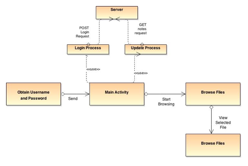

SpeedStudy Docs
All the code for this project is available at github.com/bentranter/course-notes
Introduction
About
SpeedStudy can be summed up as, "the way to get straight A's studying for three minutes a day". SpeedStudy aims to enable students to be able to spend around three minutes/day studying, while retaining around 95% of the content in their notes. SpeedStudy combines two modern approaches to speeding up learning: speed reading and spaced repetition. We'll see more about how these approaches can help students learn and study much faster shortly.
From a technical perspective, SpeedStudy aims to be an extremely lean service. That means, blazingly fast load times, as-small-as-possible codebase, modular design pattterns, simple architecture, and small data footprint. Since we're essentially a service that stores text via a REST API, we can create an architecture that is extremely efficient, both in terms of cost and bandwidth.
Getting Started
WARNING: Only run this on Windows if you are very brave! While this will run on Windows, it is designed to run on Mac OS X or Linux.
Before installing and running this application, you'll need to have a few things installed:
- Python (v2.7 recommended, v3.x.x not supported, comes installed by default on Mac OS X and Linux)
- A C++ compiler (both Clang and GCC will work)
- Node.js v10.28 (you can install that here)
- Git (version control software, install here)
- NPM (this will come istalled by default when you install Node.js)
- RethinkDB (you can install that here)
Installation Instructions
Once you've downloaded everything listed above, you'll need to run a few commands from your command prompt or terminal. Open a window, and run:
$ rethinkdb
That will start RethinkDB. You can view the RethinkDB admin panel by going to 0.0.0.0:8080 in your browser.
Once RethinkDB is running, open a second window in your command prompt or terminal, and run the following commands:
$ git clone https://github.com/bentranter/course-notes.git
$ cd course-notes && cd web
$ npm install
$ npm start
This will clone the project's source code from GitHub, install all the project's dependencies, and start the server. If you get errors, make sure RethinkDB is running on your computer somewhere. If you see an error originating from a process called "Node-Gyp", make sure that Python 2.7 is installed on your computer and in your $PATH. If everything is working, you should be able to point your browser to 0.0.0.0:3000 and see the web UI up and running.
To run the tests, open a third window in your command prompt or terminal, and navigate to the tests directory. Once you're in there, run the command $ jasmine-node . . That will run all the tests automatically, and inform you of any failures. Note: The test coverage is around 30% right, and doesn't cover every possible case. We're working on improving the coverage.
Architecture
Overview
SpeedStudy is multiple client-server application. That means that different clients can connect to the same server. This works by communicating over HTTP via our REST API. As you know, HTTP stands for Hypertext Transfer Protocol. Our application sticks to the four main HTTP verbs: GET, POST, PUT and DELETE. As you probaly also know, REST stands for Representational State Transfer. It is a stateless, client-server, cacheable communication protocol - perfect for a client-server app with multiple clients.
Our server runs on Node.js, and uses the Express framework as middleware. We use a NoSQL database called RethinkDB to store our data. The web client uses Backbone.js as a framework (update: the web client has been moved to Exoskeleton.js, a lighter-weight implementation of the Backbone framework). There are two mobile clients: one for iOS, and one for Android. The iOS client is in development, but so far id written in Swift. The Android app is written in Java, and relies on the Android SDK and OKHttp by Square for handling HTTP requests.
Security
For password security, we use a one-way hashing algorithm called bcrypt. We also salt each hash. Bcrypt is a nice algorithm, because it takes around two seconds to execute, so it is very strong against brute force and collision attacks.
We use UUIDs for each database entries' id to enforce uniqueness, no matter what dataset it might be in (the odds of creating two identical UUIDs is approximately one in 17 trillion, given sufficient entropy).
We use JSON web tokens, and force all communication with the server to be over HTTPS using SSL (to encrypt all traffic). When a user signs up or logs in, they're given a JSON web token that is valid for seven days. They then must send their token with every request to our API. JSON web tokens are 150-character longs strings that are signed and encrypted using a secret that only the server is aware of, so they cannot be decrypted and tampered with by a client.
Each user's username resides within their token, and the server requests a user's username from the token, to ensure that a user can only see their own notes.
Anytime an operation that is considered to be a security risk occurs (deleting large amounts of notes, changing a password, etc), and email is sent to that user informing them of that action, so that if it was not done by them, they are at least made aware of the particular action.
API Endpoints
There are two types of API Endpoints: secure and insecure.
A secure endpoint is one that is protected by our authorization middleware (that is, that endpoint requires a valid token to be sent with the request). An insecure endpoint is one that doesn't require a token to be sent with the request.
Insecure Endpoints
/api/signup- HTTP method:POST. Allows a user to enter their desired username and password to signup for our service. Returns a valid JSON web token for that username./api/login- HTTP method:POST. Allows a user to enter their username and password to login to our service. Returns a valid JSON web token for that username.
Secure Endpoints
/api/notes- HTTP method:GETAllows a user to retrieve all their notes./api/notes- HTTP method:POSTAllows a user to create a new note. Returns the note created./api/notes/:id- HTTP method:GETAllows a user to retrieve a single note by id./api/notes/:id- HTTP method:PUTAllows a user to update or change a single note by id./api/notes/:id- HTTP method:DELETEAllows a user to delete a single note by id.
Making a Request
A sample POST request would look something like this:
POST /api/signup HTTP/1.1
Host: studyfast.com
Cache-Control: no-cache
Content-Type: application/x-www-form-urlencoded
username=YourUserName&password=YourPassword
You must specify that the content-type is application/x-www-form-urlencoded when you make a POST or PUT request, otherwise the request will fail.
As we mentioned above, when you makwe a request to a secure endpoint, you must include your token. A token can be send in three different ways:
- As an
X-Access-Tokenin the request header. - As an
accessTokenin the request body. - As an
accessTokenin the URL parameters, for example:/api/notes?accessToken=yoursupercrazylongtoken.
Data Models
As of right now, our data models are simple:
User
- username: String
- password: String
Notes
- title: String
- subtitle: String
- content: String
- folder: String
- dateCreated: Date
- dateUpdated: Date
- timesReviewed: Number
Android Architecture
Purpose
The mobile application stores files from the server onto the mobile device. It requires the server to respond with a JSON Object token when a login is requested. It also requires the server to respond with a JSON Object containing all of the users documents stored on the server when a request containing the token is sent to the server. The mobile application must be able to form the POST and GET requests sent to the server, as well as deal with the response from the server or any error that occurs. It must have the ability to access all of the files that have been taken from the server and stored locally.
General Priorities
The main priority of the application is that it be easy to use for the user. This includes having the application respond in a way that the user would expect when the user interacts with it. The user should be able to easily navigate their way through the application. This also includes not giving a user the opportunity to break the application. The application is also designed to be easily expanded as well as to be easily maintained, handling changes on the server side. The classes for updating and logging in should be designed in a way that allows the application to do more tasks with the information it receives from the server.
Major Architecture Issues
One design issue was in what way to deal with the information coming in from the server, and how to store both the content from each document as well as the data related to each document such as its id, date last modified, etc. One solution was to store the incoming data as a String, then parse through the String and create a bunch of ArrayLists containing all the information. One issue with this was that the characters used to separate the information could also be part of the information, which left a possibility of errors in the parsing. One possible solution to this problem was using regular expressions and lexically parsing through, but a much simpler solution was to just store the information from the server as an array of JSON objects, and create new JSON objects to store locally containing the information that needed to be stored.
Another design issue was setting up menus and changing menus depending on if the user logs in, or if an update fails, etc. This was an issue because networking tasks must be run asynchronously from the UI thread, and retrieving a response was less then intuitive. The solution was to create a singleton of global variables, then on any activity that could modify the menu bar, set a variable telling the application to wait and see if the menu needs to be change, and have the networking tasks set a variable indicating if the menu needs to be changed or not, and to stop waiting.
Details of the Architecture
The application uses a REST API to make requests to the server. The requests are formed by an OkHttpClient, open source software by Squareup. The response is a JSON object. Doing a POST request with a valid username and password to the server login will return a token, token expiration date and the username. These, along with the password sent in the request, are saved in the applications key-value storage. Sending an GET request to the servers notes endpoint along with a valid token will reply with all of the users documents on the server.
Once the client has received all the documents from the server, it compares their lastModified date with the lastModified date of the documents saved locally. For each file from the server that has been updated more recently, the local version of the document will be rewritten with the content of the document from the server. The file containing information about the documents its then updated to reflect these changes.
Design
Server
The server has an extremely simple design. Essentially, it is two files: one with some startup code for the server that handles the database connection, which port to serve on, the API endpoint names, and whether to enable development mode or production mode, and the other handles the server's application logic.
The applicatino consists of the model schemas, the authentication middleware, and the request/response handling for the API endpoints. There are two schemas: one for the user and one for the notes.
The primary key for the user is the username. The primary key for the notes is the id. A user has a one-to-many relationship with the notes (relations in a NoSQL database? Weird, I know, but it speeds up our queries massively).
The authenticatio middleware is two functions.
The first is one that executes before theWeb Client
Our web client is currently under development and is at best, a huge mess. We use an MVC approach, and complete documentation will be added once more progress is made on the web client.
Android Client
Each Activity (screen / task of the application) is defined as a class. When something on the screen is tapped, such as a button or dragging a bar, a method in the class will be called.
SpeedStudy launches into the class AppLaunch, where it will check to see if the users username and password are stored. If they are not, it will launch the login screen. If the username and password are found, it will check to see if the token used to authenticate with the server needs to be updated. This includes checking if the token exists, and if the token is not expired. If it fails one of these checks, then the MainActivity will get launched with the instruction to attempt login with the stored credentials. If the token makes it through the checks, the MainActivity will launch with the instruction to update the locally stored files, using the stored token.
The LoginScreen has 2 buttons: "Login" and "Continue without Login" which correspond to the methods "login" and "skipLogin" in the LoginScreen class. Tapping one of these button will call the corresponding method, and either launch MainActivity with the instruction to not login, or to attempt login with the entered username and password.
The MainActivity makes calls to Login and Update. These methods will either do their job with no notification, or prompt an error if one occurs. When the user selects an action that could cause the menu to be updated, the activity will wait for a global variable to change that indicates if a change in the menu should occur. When the user selects Login the application launches the LoginScreen activity. If Logout is selected, the application will delete the stored username, password, token and tokenExpiration and launch the LoginScreen activity. Tapping on the "Open Local Files Browser" button will call the method openLocalFileBrowser, which launches the LocalFilesBrowser Activity.
The LocalFilesBrowser finds all the folders and documents in the root of the application storage and sorts them, with folders dislaying before documents, then sorted alphabetically. Selecting a folder will launch another instance of LocalFilesBrowser, displaying the folders and documents inside the selected folder. Selecing a Document will launch DocumentLoader, passing it the data from the document as a string.
The DocumentLoader will create 2 tabs, one responsible for displaying the entire content of the document, and one responsible for displaying the speed reader activity. Selecting a tab launches a new instance of the activity corresponding to the tab. When the activity being displayed is DisplayDocument, it will display the full data as plaintext. If the data extends below the screen, the user can slide their finger up the screen to make it scroll down.
On the SpeedReader Activity, the buttons on the screen call the methods moveBar, slowDown, SpeedUp, startPauseOrResume depending on the button tapped. These control how the text is rotated through on the screen.
The Login and Updates Classes are called asynchronously by MainActivity. Both of them Set global variables as well as store information that is used by the application. They make use of the Error class to store errors received from the attempting communication with the server. This Error is used in determining if the MainActivity should be prompted with an Error such as "invalid login information".
Global variables are passed around by the Singleton GlobalApp.
Functionality Implemented to Date
- Application automatically loads to either the login screen, or the main activity depending on if login information has been saved.
- 'Continue without Login' on the login page will bring the application to the main activity correctly.
- 'Login' on the login page will launch main activity telling it to login using the entered information.
- The correct menu loads on Main Activity, and correctly changes after login and logout.
- Selecing 'Login' menu in main activity correctly brings up the login activity.
- Selecing 'Login' menu in main activity correctly brings up the login activity.
- After 'Login' has been selected on the login activity, the application will attempt to login to the server with the credentials the user entered, then saving the token, token expiration date and login credentials locally if successful.
- Selecing 'Update' from the menu attempts to retrieve user information from the server using the stored token, then compare against locally stored files and update required files. Will prompt if an error occurs.
- Selecting 'Open Local File Browser' will launch the activity to browse through files stored on the device.
- Selecting a folder on the device will open a file browsing activity to browse within the folder.
- Selecting a document will open an activity to view the contents of the document, with tabs allowing the user to switch between displaying the entire contents on the speed reader.
- Selecing the speed reader tab will display the speed reader activity, which will display part of the document text, buttons for speed up, slow down and start/pause, as well as a slider bar to set the speed.
- Tapping start will make the displayed text rotate through chunks of the document, showing at max 10 characters at a time, at the speed designated by the user. This will stop on the last line of the document.
- Tapping the pause button will stop the text from changing until the pause (resume) button is pressed again.
- Dragging the slide bar will change the speed that the text changes.
- Tapping the + and - buttons will increase and decrease the speed respectively, stopping at max and min speeds.

iOS Client
The iOS client is nothing more than a few blank views at the moment, but complete documentation will be created as development progresses.
Code
Android
The Android code docs were generated with Doxygen, and appear here.
Server
app.js
This is the main entry point of the server.
var moduleName = require('module-name');
This is how modules are imported in Node.js.
app.set('settingName', options);
This handles Express's settings.
app.use('middlewareName', options);
This handles what middleware we use with Express.
app.get('route', authFunctionName, functionName);
This defines a route at an endpoint, and allows you to write a function that defines how to handle it. It also let's you specify an HTTP verb, in this case, it's "GET".
app.post('route', authFunctionName, functionName);
This defines a route at an endpoint, and allows you to write a function that defines how to handle it. It also let's you specify an HTTP verb, in this case, it's "POST".
app.put('route', authFunctionName, functionName);
This defines a route at an endpoint, and allows you to write a function that defines how to handle it. It also let's you specify an HTTP verb, in this case, it's "PUT".
app.delete('route', authFunctionName, functionName);
This defines a route at an endpoint, and allows you to write a function that defines how to handle it. It also let's you specify an HTTP verb, in this case, it's "DELETE".
routes/api.js
This is where all the functionality of the API comes from.
var Model = thinky.createModel('modelName', options);
Creates a model and allows you to specify the options. This is covered in full in Thinky's docs.
Model.ensureIndex('indexName');
Let's you specify a model's index.
Model.pre('actionName', callback);
Let's you specify an action to do before another action is called. Useful for calling functions before actions like "save", or "update".
login(request, response);
Get's a login token based on your username. Returns a JSON web token as a string. API: private, HTTP: GET.
authorizeToken(request, response, next);
Handles the token based auth. Get's a token from the request, decodes it with the secret, checks if it's valid, and handles possible errors. API: private.
signUp(request, response);
Creates a new user in the database. Returns a JSON web token as a string. API: public, HTTP: GET.
listNotes(request, response);
Lists a user's notes. Returns an array of objects containing their notes. API: public, HTTP: GET.
getNote(request, response);
Get's a user's note by id. Returns an object containing the requested note. API: public, HTTP: GET.
addNote(request, response);
Creates a new note. Returns an object containing the note created. API: public, HTTP: POST.
updateNote(request, response);
Updates a note. Returns an object containing the updated note. API: public, HTTP: PUT.
deleteNote(request, response);
Deletes a note. Returns a success message as an object. API: public, HTTP: DELETE.
Web and iOS
The web client and iOS client don't have enough code written yet that isn't spaghetti code to warrant documenting it at this stage, but documentation will be added as code is written and refactored.